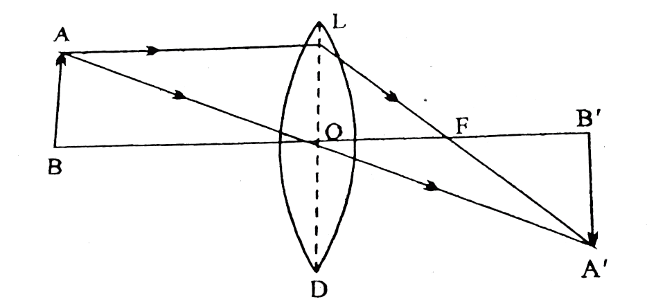

- When a ray of light passes from a rarer medium into a denser medium, it bends towards the normal after refraction. (figure)
- When a ray of light passes from a denser medium into a rarer medium, it bends away from the normal after refraction. (figure)


Or
Q: Write Snell's law.
- The incident ray, the refracted ray, and the normal at the point of incidence all lie in the same plane.
- For a given light, the ratio of the sine of the angle of incidence to the sine of the angle of refraction is constant, and this constant is called the refractive index of the second medium with respect to the first medium. It is denoted by the Greek symbol \({}_1\mu_2\) (mu). This is called Snell's law.
- \({}_1\mu_2\) = refractive index of the second medium with respect to the first medium
- \(i\) = angle of incidence
- \(r\) = angle of refraction.
Thus
- \({}_1\mu_2\) = refractive index of the second medium with respect to the first medium
- \(i\) = angle of incidence
- \(r\) = angle of refraction.
- The physical state of the medium.
- The colour of light in the medium.
- The nature of the pair of media.
The Moon is much closer to the Earth and appears larger. A large amount of light from the Moon reaches our eyes, so small changes in its light are not noticeable. Therefore, the Moon does not appear to twinkle.

Let the speeds of light in air, water, and glass be \(V_a\), \(V_w\), and \(V_g\) respectively.
At point B, the ray of light enters water from air. Therefore

- \({}_1\mu_2\) = refractive index of the second medium with respect to the first medium
- \({}_2\mu_1\) = refractive index of the first medium with respect to the second medium

Since \(PL \parallel MN\), \[ \angle PQN = \angle OPQ = i \] \[ \angle MQR = \angle OP'Q = r \] Now, from the right-angled triangle \(POQ\),
Let APB be a convex spherical surface. The refractive index of its denser medium is μ. Let a real image I of a point object O be formed. Let the incident ray OM, refracted ray IM and the normal CL make angles α, β and γ respectively with the principal axis. Then —
Angle = Arc Radius
Let the angle of incidence be i, then from the exterior angle theorem in right-angled triangle OMC —
Similarly, if r is the angle of refraction, then from the exterior angle theorem in right-angled triangle IMC —
Now from Snell's Law —
For small angles sinθ ≈ θ, therefore —
Dividing both sides by MP —
This is the formula for refraction at a convex spherical surface.

- On the colour of light used - The refractive index is highest for violet light. Hence, the critical angle is smallest for violet light and largest for red light.
- On the pair of denser and rarer media - The value of the critical angle depends on the pair of denser and rarer media. For the glass-air pair, the critical angle is about \(42^\circ\); for the water-air pair, about \(49^\circ\); and for the diamond-air pair, \(24^\circ\).
- On temperature - As temperature increases, the refractive index of the medium decreases. Hence, the value of the critical angle increases.
Or
Q: Obtain the relation between the critical angle and the refractive index of the medium.

Therefore, by Snell's law
This fact is extremely important for diamond cutters.

- The ray of light must travel from a denser medium into a rarer medium.
- The angle of incidence must be greater than the critical angle.
- Mirage in hot regions.
- Mirage in cold regions.
- Optical fibre.

An optical fibre mainly consists of three parts—
- Core: It is the central part of the fibre through which light is transmitted.
- Cladding: It surrounds the core and has a lower refractive index than the core.
- Protective Coating: It protects the fibre from external damage.
An optical fibre works on the principle of total internal reflection. When light enters the core at a suitable angle, it undergoes repeated total internal reflection at the boundary between the core and the cladding and travels forward. Thus, the light signal reaches the other end of the fibre without escaping outside.

Let APB be a convex spherical surface. The refractive index of its denser medium is μ. Let a real image I of a point object O be formed. Let the incident ray OM, refracted ray IM and the normal CL make angles α, β and γ respectively with the principal axis. Then —
Angle = Arc Radius
Let the angle of incidence be i, then from the exterior angle theorem in right-angled triangle OMC —
Similarly, if r is the angle of refraction, then from the exterior angle theorem in right-angled triangle IMC —
Now from Snell's Law —
For small angles sinθ ≈ θ, therefore —
Dividing both sides by MP —
This is the formula for refraction at a convex spherical surface.

Let APB be a concave spherical surface. The refractive index of its denser medium is μ. Let a real image I of a point object O be formed. Let the incident ray OM, refracted ray IM and the normal CL make angles α, β and γ respectively with the principal axis. Then —
Angle = Arc Radius
Let the angle of incidence be i, then from the exterior angle theorem in right-angled triangle OMC —
Similarly, if r is the angle of refraction, then from the exterior angle theorem in right-angled triangle IMC —
Now from Snell's Law —
For small angles sinθ ≈ θ, therefore —
On substituting the values —
Dividing both sides by (-MP) —
This is the formula for refraction at a concave spherical surface.
There are two types of lenses—
- Convex lens - This lens is thicker at the middle and thinner at the edges. It converges rays of light. Hence, it is also called a converging lens. (figure)
- Concave lens - This lens is thinner at the middle and thicker at the edges. It diverges rays of light. Hence, it is also called a diverging lens. (figure)


In this way, a convex lens converges (focuses at a single point) the rays. Hence, a convex lens is called a converging lens.

In this way, a concave lens diverges (spreads out) the rays. These rays appear to come from a single point. Hence, a concave lens is also called a diverging lens.

- Principal axis - The straight line joining the centres of curvature of both surfaces of a lens is called the principal axis. It passes through the centre of the lens.
- Optical centre - The point at the middle of the lens through which a ray passes without any bending (refraction) is called the optical centre (\(O\)).
- First principal focus - The point on the principal axis through which incident rays must pass (in a convex lens), or towards which incident rays must be directed (in a concave lens), so that after refraction through the lens they become parallel to the principal axis, is called the first principal focus of the lens. In the figure, \(F_1\) is the first principal focus.
- Second principal focus - The point on the principal axis where rays parallel to the principal axis meet after refraction through the lens (in a convex lens), or from which they appear to diverge after refraction (in a concave lens), is called the second principal focus of the lens. In the figure, \(F_2\) is the second principal focus. The second principal focus is also called the principal focus of the lens.
- Focal length - The distance between the optical centre (\(O\)) of the lens and its focus (\(F\)) is called the focal length. It is denoted by the symbol \(f\).


The rules for image formation by lenses are as follows —
-
First Rule - A ray incident parallel to the principal axis, after refraction through the lens, passes through the principal focus (in convex lens) or appears to come from the principal focus (in concave lens).

-
Second Rule - A ray incident through the first principal focus (in convex lens) or directed towards the first principal focus (in concave lens), after refraction becomes parallel to the principal axis.

-
Third Rule - When a ray passes through the optical centre (O) of the lens, it does not get refracted, i.e., it goes straight.

Let a thin convex lens \(L\) be having radii of curvature \(R_1\) and \(R_2\) for its two surfaces. The refractive index of the lens material is \(\mu\).
Refraction at First Surface:
Let the image of a point object \(O\) placed on the principal axis be formed at \(I'\) after refraction through the first spherical surface, in the absence of the second surface. In this case light ray enters from air to the medium. So,
From the formula for refraction at a spherical surface \(\frac{\mu}{v} - \frac{1}{u} = \frac{\mu-1}{R}\) -
Refraction at Second Surface:
The image formed by the first surface acts as an object for the second surface. Let the image of \(I'\) be formed at \(I\) after refraction through the second surface. In this case light ray enters from medium to air. So,
From the formula for refraction at a spherical surface \(\frac{\mu}{v} - \frac{1}{u} = \frac{\mu-1}{R}\) -
When the object is at infinity \(u = \infty\) then the image is formed at the focus \(v = f\). On putting in equation (3) -
This is the Lens Maker's Formula.

Let there be two convex lenses \(L_1\) and \(L_2\) whose focal lengths are \(f_1\) and \(f_2\) respectively.
Refraction through first lens \(L_1\):
Let, in the absence of the second lens, the image of a point object \(O\) placed on the principal axis be formed at \(I_1\) after refraction through the first lens. In this case -
From lens formula \(\frac{1}{f} = \frac{1}{v} - \frac{1}{u}\) -
Refraction through second lens \(L_2\):
The image formed by the first lens acts as an object for the second lens. Let the image of \(I_1\) be formed at \(I\) after refraction through the second lens. In this case -
From lens formula \(\frac{1}{f} = \frac{1}{v} - \frac{1}{u}\) -
Adding both equations:
When the object is at infinity \(u = \infty\) then the image is formed at the combined focus \(v = f\).
This is the formula for combined focal length.
\(f\) = focal length
\(v\) = image distance
\(u\) = object distance

Let L be a convex lens whose optical center is O and focus is F. An object AB is placed at a point on its principal axis whose image is formed at A'B' after refraction through the lens.
In right-angled \(\triangle ABO\) and \(\triangle A'B'O\) -
Similarly, in right-angled \(\triangle LOF\) and \(\triangle A'B'F\) -
On comparing equation (1) and (2),
According to sign convention
On putting values with sign,
Dividing both sides by uvf
This is the lens formula.
- When the object is at infinity - When the object is at infinity, after refraction through the convex lens, the image forms at the focus on the other side of the lens. The image is real, inverted, and highly diminished, or point-sized.
- When the object is beyond \(2F\) - When the object is beyond \(2F\), after refraction through the convex lens, the image forms between \(F\) and \(2F\) on the other side of the lens. The image is real, inverted, and smaller than the object.
- When the object is at \(2F\) - When the object is at \(2F\), after refraction through the convex lens, the image forms at \(2F\) on the other side of the lens. The image is real, inverted, and the same size as the object.
- When the object is between \(2F\) and \(F\) - When the object is between \(2F\) and \(F\), after refraction through the convex lens, the image forms beyond \(2F\) on the other side of the lens. The image is real, inverted, and larger than the object.
- When the object is beyond \(F\) - When the object is beyond \(F\), after refraction through the convex lens, the image forms at infinity on the other side of the lens. The image is real, inverted, and much larger than the object.
- When the object is between \(F\) and \(O\) - When the object is between \(F\) and \(O\), after refraction through the convex lens, the image forms on the same side as the object. The image is virtual, erect, and larger than the object.


- In making magnifying glasses - It shows an enlarged image of the object.
- In correcting vision defects - Convex lenses are fitted in spectacles to correct hypermetropia (long-sightedness).
- In cameras - A convex lens is used in a camera lens to focus light at a single point.
- In microscopes and telescopes - Used to show objects enlarged and clearly.
- In projectors - Used to form an enlarged image of the object on the screen.
-
When the object is at infinity:
The image is formed between the optical centre and the focus of the lens, very close to the focus. The image is virtual, erect, and highly diminished. -
When the object is at a finite distance:
The image is formed between the optical centre and the focus of the lens, on the same side as the object. The image is virtual, erect, and smaller than the object.


- In correcting vision defects - Concave lenses are used in spectacles to correct myopia (short-sightedness).
- Used to spread out a laser beam.
- Used in cameras and binoculars to control rays and obtain clear images.
- Used in security devices such as door peepholes to give a small, wide-angle view of an object.
- Used in scientific experiments to spread out rays and to measure focal length.
That is, the power of a lens—
All distances are measured along the principal axis, taking the optical centre of the lens as the origin.
- Object distance (\(u\)): Always negative (−).
- Image distance (\(v\)): If the image is real → positive (+); if the image is virtual → negative (−).
- Magnification (\(m\)): If the image is real → negative (−); if the image is virtual → positive (+).
- Focal length (\(f\)): For a convex lens → positive (+); for a concave lens → negative (−).
- Height of the object (\(O\)): Above the principal axis → positive (+); below the principal axis → negative (−).
- Height of the image (\(I\)): Real image → negative (−); virtual image → positive (+).
(The equation of the lens maker's formula is missing here in the original document — in the source, this line connects directly to the next explanation.)
When a lens is immersed in a liquid whose refractive index with respect to air is less than the refractive index of the lens material (glass) with respect to air, the focal length of the lens increases, because the refractive index of glass with respect to the given liquid is less than the refractive index of glass with respect to air.
(The intermediate step of calculating the value of \(\mu\) from the lens maker's formula is not available here in the source.)
For an air bubble inside water, whose surface is convex, the value of \(\mu\) is less than 1, because the refractive index of air with respect to water is less than 1. Thus, according to the formula, the focal length of the air bubble (convex lens) inside water turns out to be negative, which represents the concave nature of the lens. Hence, an air bubble in water, whose surface is convex, behaves like a concave lens.
Now, suppose two convex lenses of focal lengths \(f_1\) and \(f_2\) are placed at a distance \(d\) apart, then from the formula
(The formula (equation) for the combination of two lenses is missing here in the source — the original notes proceed directly to the conclusion.)
it follows that the two lenses must be placed at a distance of \(f_1+f_2\) apart.
- What is a lens? – A transparent object bounded by two curved surfaces, or by one curved and one flat surface, is called a lens.
- How many types of lenses are there? – There are two types of lenses — (i) Convex lens (ii) Concave lens.
- What is another name for a convex lens? – Converging lens.
- Which lens is called a diverging lens? – Concave lens.
- What effect does moving a lens from air into water have on its focal length? – The focal length increases.
- For which colour of light is the focal length of a lens minimum? – For violet light.
- What type of lens does an air bubble in water act as? – Concave lens.
- What effect does decreasing the focal length of the eyepiece of a microscope have on its magnifying power? – The magnifying power increases.
- What should be done to increase the magnifying power of a telescope? – An objective lens of larger focal length should be used.
- What is the formula for the power of a lens? – \(P=\dfrac{1}{f}\) (where \(f\) = focal length in metres).
- What is the unit of power of a lens? – Dioptre.
- How does the focal length of a lens depend on its power? – Focal length is inversely proportional to power.
- Where is a convex lens used? – In magnifying glasses, cameras, microscopes, telescopes, etc.
- Where is a concave lens used? – In spectacles for myopia (short-sightedness) and in telescopes.